1072C44 exhaust manifold heat shield on bulkhead - r+r
- Path
- Procedures > 10 ENGINE > 1072 INLET AND EXHAUST MANIFOLDS > 1072C exhaust manifolds > 1072C44 exhaust manifold heat shield on bulkhead - r+r
- Kind
- repair procedure (removal / refitting; the operation number is the code)
- Applies to
- engines: 1.6 TS, 2.0 TS, 1.9 JTD 8V, 1.9 JTD 16V; all production periods
- Interactive page
- https://sloeber94.github.io/elrnDB-a147/en/#/3024856
Applies to: engines: 1.6 TS; all production periods; only with equipment: 103 CV
 Removing
Removing
 Refitting
RefittingPosition the vehicle on the ramp.
Ensure that the ignition key is in the OFF postition, then disconnect the battery negative terminal.
 | Name | Connector |
|---|---|---|
- | Battery |
1. Disconnect the electrical connection for the front Lambda sensor and release it from the mounting bracket.
| Name | Connector |
|---|---|---|
1 | Lambda sensor downstream of post-catalyzer |
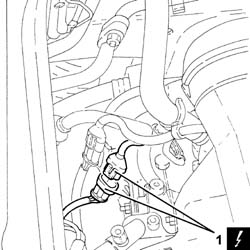
Applies to: engines: 1.6 TS; all production periods; only with equipment: 103 CV
1. Undo the nuts (1a) and the bolts (1b) and remove the exhaust manifold (1c) heat shield.
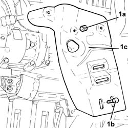
Applies to: engines: 1.6 TS; all production periods; only with equipment: 103 CV
Refitting
RemovingPlace the exhaust manifold heat shield back in its housing and secure it using the nuts and bolts.
Connect the electrical connection for the front Lambda sensor and secure it to the mounting bracket.
Connect the battery terminal (-).
Remove the car from the ramp.
Applies to: engines: 1.6 TS; all production periods; only with equipment: 120 CV
Removing
RefittingPosition the vehicle on the ramp.
1. Loosen the lower bolts fixing the exhaust manifold heat shield.
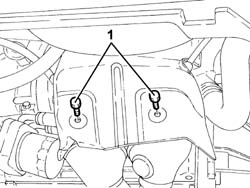
Applies to: engines: 1.6 TS; all production periods; only with equipment: 120 CV
1. Undo the upper bolts fixing the exhaust manifold heat shield and release it from the pins.
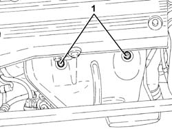
Applies to: engines: 1.6 TS; all production periods; only with equipment: 120 CV
1. Working underneath the vehicle, remove the exhaust manifold heat shield.
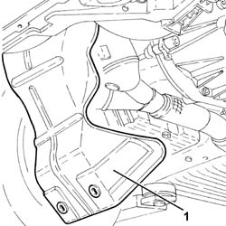
Applies to: engines: 1.6 TS; all production periods; only with equipment: 120 CV
Refitting
RemovingWorking underneath the vehicle, place the exhaust manifold heat shield back in its housing.
Tighten the upper nuts fixing the exhaust manifold heat shield.
Tighten the lower bolts fixing the exhaust manifold heat shield.
Remove the car from the ramp.
Applies to: engines: 2.0 TS; all production periods
Removing
RefittingPosition the vehicle on the ramp.
Proceed with the removal 7055B54 under-engine guard - r r .
1. Loosen the lower bolts fixing the exhaust manifold heat shield.
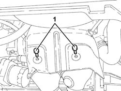
Applies to: engines: 2.0 TS; all production periods
1. Undo the bolt fixing the engine oil dipstick tube.
2. Undo the upper bolts fixing the exhaust manifold heat shield and release it from the exhaust manifold.
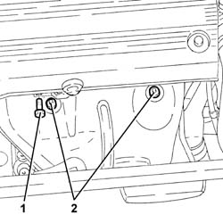
Applies to: engines: 2.0 TS; all production periods
1. Working underneath the vehicle, remove the exhaust manifold heat shield.
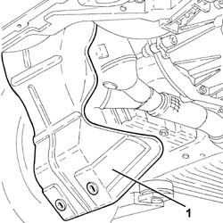
Applies to: engines: 2.0 TS; all production periods
Refitting
RemovingWorking underneath the vehicle, place the exhaust manifold heat shield back in its housing.
Tighten the upper nuts fixing the exhaust manifold heat shield.
Tighten the bolt fixing the engine oil dipstick pipe.
Tighten the lower bolts fixing the exhaust manifold heat shield.
Proceed with the refitting 7055B54 under-engine guard - r r .
Remove the car from the ramp.
Applies to: engines: 1.9 JTD 8V; all production periods
Removing
Refitting1016A10 sound-proofing cover - r + r
1. Disconnect the upper flexible coolant supply pipe from the rigid pipe to the engine oil heat exchanger.
Recover the emerging coolant , then plug the hoses.
2. Undo bolts (2a) and move the rigid section (2b) of the delivery pipe to the heat exchanger.
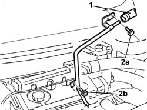
Applies to: engines: 1.9 JTD 8V; all production periods
1. Unscrew the retaining bolts
2. Remove the exhaust manifold heat shield.
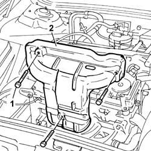
Applies to: engines: 1.9 JTD 8V; all production periods
Refitting
RemovingFit the exhaust manifold heat shield and tighten the retaining bolts.
Fit the rigid section of the delivery pipe to the heat exchanger.
Connect the upper coolant hose from the rigid delivery section to the engine oil heat exchanger.
Applies to: engines: 1.9 JTD 16V; all production periods
Removing
RefittingPosition the vehicle on the ramp.
Proceed with removal 1016A10 sound-proofing cover - r + r .
Proceed with removal 7055B54 under-engine guard - r r .
Proceed with removal 1088D24 rigid pipe for coolant inlet to water pump - r + r .
1. Undo the bolts (1a) and remove the exhaust manifold heat shield (1b).
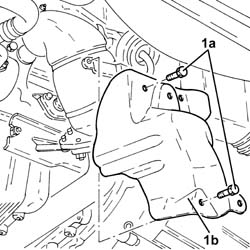
Applies to: engines: 1.9 JTD 16V; all production periods
1. Undo the nuts (1a) and remove the upper exhaust manifold heat shield (1b).
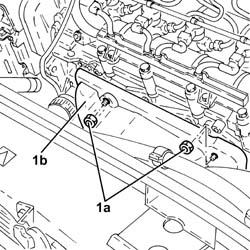
Applies to: engines: 1.9 JTD 16V; all production periods
Refitting
RemovingPlace the upper exhaust manifold heat shield back in its housing and fix it using the nuts.
Place the lower exhaust manifold heat shield back in its housing and fix it using the bolts.
Proceed with refitting 1088D24 rigid pipe for coolant inlet to water pump - r + r .
Proceed with refitting 7055B54 under-engine guard - r r .
Refill the engine cooling system with coolant 0010T20 coolant change .
Proceed with refitting 1016A10 sound-proofing cover - r + r .
Position the vehicle on the ramp.
Topics linked from this page (7)
- 0010T20 coolant change
- 0010T21 coolant check density and top up if necessary
- 1016A10 sound-proofing cover - r + r
- 1088D24 rigid pipe for coolant inlet to water pump - r + r
- 7055B54 under-engine guard - r r
- A1B Battery ( Connectors )
- K17 Lambda sensor downstream of post-catalyzer
Topics that link to this page (56)
- 0510C20 lubrication system - check delivery pressure
- 1008A44 rear rigid mount - r r
- 1008B20 power unit intermediate mount flexible block - replace
- 1008C19 engine link mount - r r
- 1016C10 cylinder head - r + r and replace gasket
- 1020A20 crank case oil sump - r + r clean seals for sealant application
- 1020D10 front crank shaft oil seal cover - r + r and replace seals with timing belt removed
- 1020D15 Crankshaft oil seal FRONT COVER - R.R. and Replace. gaskets on engines with oil pump on crankshaft and heat exchanger
- 1020D36 flywheel end oil seal - replace for manual gearbox with hydraulic selection versions
- 1020D38 flywheel side oil seal - replace
- 1024B10 engine flywheel - r + r for versions with manual gearbox
- 1024B11 engine flywheel - r r for manual gearbox with hydraulic selection versions
- 1028H10 connecting rod and piston set - r r
- 1056B90 system cable bundle - r + r
- 1064A24 variable geometry turbocharger exhaust manifold assembly sleeveleading to exhaust pipe r r
- 1072C12 exhaust manifold - r r
- 1072C13 exhaust manifold gasket - replace
- 1076A46 heat shield for catalytic preconverter r r
- 1076A48 catalytic converter heat shield - r r
- 1076B12 exhaust pipe assembly r+r emission control versions
- 1076B34 front catalytic converter attachment seal - replace
- 1080B40 catalytic pre-converter - r r
- 1080B62 catalytic converter - r + r
- 1080B92 left upper lambda sensor r r
- 1080B93 right upper lambda sensor r r
- 1080B94 front lambda probe with catalitic converter r r
- 1080B98 LAMBDA SENSORS (all) - R.R.
- 1084A16 oil dip stick pipe - r r
- 1084A42 engine oil pressure warning light switch - r + r
- 1084B26 emgine oil intake duct - r r
- 1084B40 engine oil delivery pipe to turbocharger - r + r
- 1088D24 rigid pipe for coolant inlet to water pump - r + r
- 1088D26 rigid intake pipe to water pump - r+r for versions with a/c
- 1810A20 clutch - r + r
- 1810A28 clutch - r r for manual gearbox with hydraulic selection versions
- 1820A24 thrust bearing linkage - r + r
- 1820B30 OPERATING CYLINDER/CLUTCH HYDRAULIC ACTUATOR - R.R.
- 2110A10 manual gearbox and differential - r + r
- 2110A11 manual gearbox with differential - r r for versions with hydraulic selection
- 2110C22 gear input shaft seals - r r
- 2110C24 seals for gearbox input shaft - r r for manual gearbox with hydraulic selection versions
- 2710A32 intermediate drive shaft bearing support - r + r with intermediate drive shaft removed
- 2710A35 intermediate drive shaft mount - r r
- 3340B56 RIGID PIPE from hydraulic CONTROL UNIT to RIGHT FRONT BRAKE - R.R.
- 4130A10 power steering box - r+r - check tow-in if necessary separately - includes bleeding
- 4130B20 power steering pump r r
- 4130B32 power steering pump mount - r r
- 4130B40 outlet pipe from pump to power steering case r r
- 4130B49 return pipe from power steering case to heat exchanger pipe r r
- 4410c10 front suspension stabilizer bar - r+r - check wheel geometry separately
- 4410D13 front suspension beam - r r
- 4410D15 front suspension beam complete with wishbones and stabiliser bar r r
- 5510C26 rpm sensor - r+r
- 5510C42 knock sensor - r+r
- 5520B12 starter motor - r+r for versions with a/c
- 5530A10 alternator - r+r